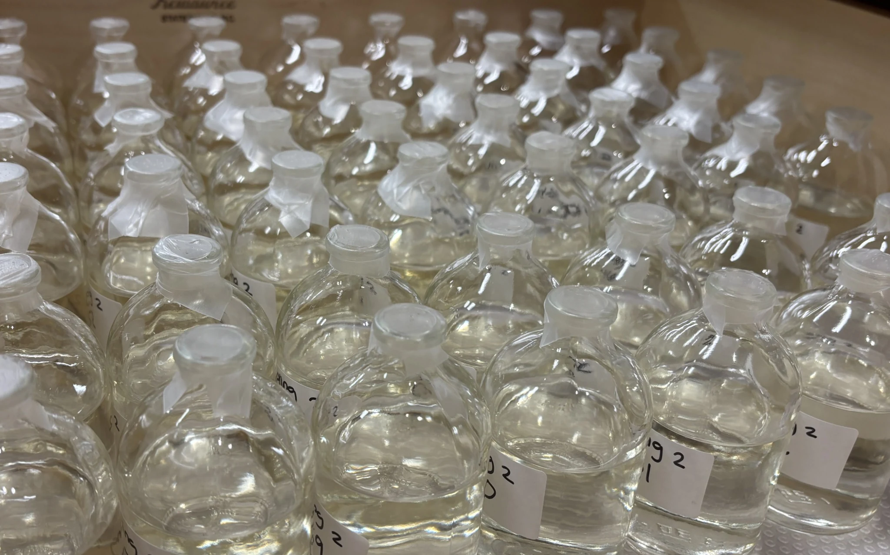
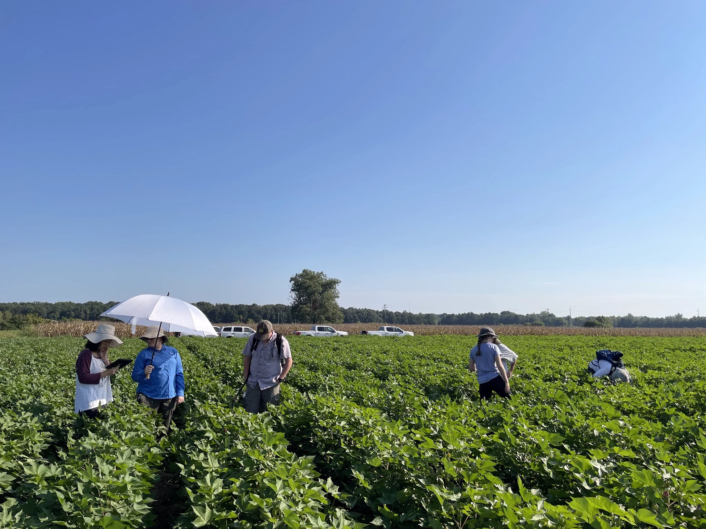
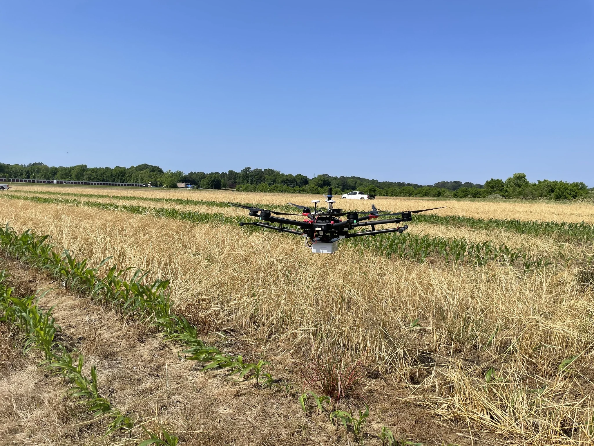

RESEARCH
Engineering biogeochemistry
We study how water, microbes, and minerals shape the fate of nutrients and carbon, and use that knowledge to design and evaluate nature-based solutions.
RESEARCH FOCUS
Nutrient Cycling and Water Quality
We follow nitrogen and phosphorus as they move through soils, sediments, and surface waters. By distinguishing nutrient forms, we can ask how much is available to microbes and how much may travel downstream.
- Dissolved organic nitrogen and its biodegradable fraction
- Microbial nitrogen transformations, including denitrification
- Nutrient exchange between soils and water




Related publications and data (26)
- SMX reshapes algal communities in blooms by altering algal metabolism and the potential functions of phycosphere bacteria (2026)
- Aqueous PFOS exposure decouples gaseous carbon loss from mineral-associated carbon retention in controlled wetland-interface mesocosms (2026)
- PFOS-induced alteration in phosphorus dynamics and soil microbial functions in wetlands (2025)
- Risk of increasing soil nitrous oxide emissions by chemical oxidation modification on biochar (2025)
- Interaction between root exudates and PFOS mobility: Effects on rhizosphere microbial health in wetland ecosystems (2025)
- Phosphorus bioavailability and recycling potential in various organic waste: Assessment by enzymatic hydrolysis and 31P NMR (2025)
- Nitrous oxide fluxes during a winter cover crop season in a Mississippi corn cropping system (2024)
- Short-term exposure to triclocarban alters microbial community composition and metabolite profiles in freshwater biofilms (2024)
- An analysis of the long-term water quality in Everglades stormwater treatment areas using structural equation models (2024)
- Phosphate Solubilizing Microorganisms Increase Soil Phosphorus Availability: A Review (2024)
- Seasonal and spatial patterns of surface water quality in large-scale treatment wetlands with different vegetation communities (2023)
- Responses of riparian plant roots to acute combined nitrogen and phosphorus stress: changes in root morphology and antioxidant system (2023)
- Plant rhizosphere defense system responds differently to emerging Polyfluoroalkyl substances F-53B and PFOS Stress (2023)
- Rhizosphere soil microbial survival states and N-related process during riparian plant dormancy: influences of plant locations and plant species (2022)
- The role of fine root morphology in nitrogen uptake by riparian plants (2022)
- Long‐term accumulation of macro‐ and secondary elements in subtropical treatment wetlands (2021)
- Stable isotope analyses of nitrogen source and preference for ammonium versus nitrate of riparian plants during the plant growing season in Taihu Lake Basin (2021)
- Nitrous oxide dynamics during denitrification along a hydrological gradient of subtropical grasslands (2020)
- Duration and frequency of drainage and flooding events interactively affect biogeochemistry and N flux in subtropical drained peat soils (2020)
- Soil phosphorus forms and storage in stormwater treatment areas of the everglades: influence of vegetation and nutrient loading (2020)
- Effect of perfluorooctanesulfonate (PFOS) on the rhizosphere soil nitrogen cycling of two riparian plants (2020)
- Co-adsorption of perfluorooctane sulfonate and phosphate on boehmite: Influence of temperature, phosphate initial concentration and pH (2017)
- Nitrous Oxide Production and Reduction in Seasonally‐Flooded Cultivated Peatland Soils (2016)
- Nitrous oxide production and consumption by denitrification a grassland: effects of grazing and hydrology (2015)
- Adsorption of phosphorus in aqueous solution by dewatered alum sludge (2010)
- Long-term Accumulation of Macro-elements in Subtropical Treatment Wetlands (2021)
RESEARCH FOCUS
Nature-Based Water Treatment
We use field studies and pilot systems to test how wetland design and operation affect water treatment. We examine how water moves through vegetation, soils, and treatment media, and how that contact changes nutrient removal.
- Constructed wetlands for watershed restoration
- Vegetation, flow paths, and hydraulic loading
- Stormwater treatment and nutrient removal


Related publications and data (17)
- MAPK signaling pathway and rhizosphere modulation: mechanisms of arbuscular mycorrhizal symbiosis in enhancing Phragmites communis tolerance to triclocarban stress (2026)
- Drought exacerbates levofloxacin phytotoxicity: insights from Phragmites australis (2025)
- PFOS-induced alteration in phosphorus dynamics and soil microbial functions in wetlands (2025)
- Risk of increasing soil nitrous oxide emissions by chemical oxidation modification on biochar (2025)
- Interaction between root exudates and PFOS mobility: Effects on rhizosphere microbial health in wetland ecosystems (2025)
- An analysis of the long-term water quality in Everglades stormwater treatment areas using structural equation models (2024)
- Seasonal and spatial patterns of surface water quality in large-scale treatment wetlands with different vegetation communities (2023)
- Plant rhizosphere defense system responds differently to emerging Polyfluoroalkyl substances F-53B and PFOS Stress (2023)
- Long‐term accumulation of macro‐ and secondary elements in subtropical treatment wetlands (2021)
- Soil phosphorus forms and storage in stormwater treatment areas of the everglades: influence of vegetation and nutrient loading (2020)
- Co-adsorption of perfluorooctane sulfonate and phosphate on boehmite: Influence of temperature, phosphate initial concentration and pH (2017)
- Adsorption of phosphorus in aqueous solution by dewatered alum sludge (2010)
- Performance optimization of a lab-scale tidal flow constructed wetland for domestic wastewater treatment (2010)
- Increasing the fermentation slurry pH inside digester by CO2 stripping (2010)
- Northern rural domestic sewage treatment by integrated household constructed wetlands (2009)
- Household constructed wetland for rural family wastewater treatment (2009)
- Long-term Accumulation of Macro-elements in Subtropical Treatment Wetlands (2021)
RESEARCH FOCUS
Soil Health, Carbon Cycling, and Greenhouse Gases
We study what makes organic carbon persist in agricultural and wetland soils. We also measure greenhouse gases to understand how flooding, drainage, and soil amendments affect the balance between carbon storage and emissions.
- Soil organic matter and mineral-associated carbon
- Soil health in managed agricultural systems
- Carbon dioxide, methane, and nitrous oxide emissions




Related publications and data (22)
- Phenology constrains the predictability of soil respiration in cropping systems revealed through interpretable machine learning (2026)
- Arbuscular mycorrhizal symbiosis enhances microbial contribution to mineral-associated organic carbon persistence in soil: Insights from soil microbial community and microbial necromass carbon (2026)
- Aqueous PFOS exposure decouples gaseous carbon loss from mineral-associated carbon retention in controlled wetland-interface mesocosms (2026)
- Mineral-associated organic matter and soil health indicators in subsiding cultivated histosols of the Everglades Agricultural Area (2026)
- Arbuscular mycorrhizal symbiosis enhances the storage of particulate and mineral-associated organic carbon in soil: Insights from soil zymography and transcriptomic analysis (2026)
- Biochar modulates temperature sensitivity of soil N2O emissions: Soil-specific mechanisms (2026)
- Deploying anaerobic digestion for animal manure in China by 2030 maximizes short-term methane mitigation benefits (2026)
- Effects of fresh and aged biochar on soil N2O emission from a poplar plantation (2025)
- Arbuscular mycorrhizal symbiosis enhances the accumulation of plant-derived carbon in soil organic carbon by regulating the biosynthesis of plant biopolymers and soil metabolism (2024)
- Nitrous oxide fluxes during a winter cover crop season in a Mississippi corn cropping system (2024)
- Integration effects of soil amendments and cover crops on dryland no‐till corn (2024)
- Cover crops and reduced tillage did not alter soil chemistry in first 3 years (2024)
- Phosphate Solubilizing Microorganisms Increase Soil Phosphorus Availability: A Review (2024)
- Effects of Cover Crops and Soil Amendments on Soil CO2 Flux in a Mississippi Corn Cropping System on Upland Soil (2023)
- Tradeoff of CO2 and CH4 emissions from global peatlands under water-table drawdown (2021)
- Nitrous oxide dynamics during denitrification along a hydrological gradient of subtropical grasslands (2020)
- Duration and frequency of drainage and flooding events interactively affect biogeochemistry and N flux in subtropical drained peat soils (2020)
- Effects of riparian land-use changes on soil aggregates and organic carbon (2018)
- Greenhouse Gas Emissions Under Different Drainage and Flooding Regimes of Cultivated Peatlands (2017)
- Nitrous Oxide Production and Reduction in Seasonally‐Flooded Cultivated Peatland Soils (2016)
- Nitrous oxide production and consumption by denitrification a grassland: effects of grazing and hydrology (2015)
- Assessment of soil organic carbon in different ecosystems by using field, lab, and modeling methods (2025)
RESEARCH FOCUS
Environmental Monitoring and Sensing
We combine field measurements with observations from satellites, drones, and ground vehicles. These tools connect what we measure at a sampling point with patterns across a wetland or agricultural field.
- Field sampling and environmental sensors
- Satellite mapping of aquatic vegetation
- Spatial and seasonal patterns in environmental conditions




Related publications and data (5)
- Multi-Sensor Mapping of Aquatic Vegetation Using Sentinel-2, SAR–Optical Fusion and Derived Spectral and SAR Indices in South Florida (2026)
- Phenology constrains the predictability of soil respiration in cropping systems revealed through interpretable machine learning (2026)
- An analysis of the long-term water quality in Everglades stormwater treatment areas using structural equation models (2024)
- Seasonal and spatial patterns of surface water quality in large-scale treatment wetlands with different vegetation communities (2023)
- Assessment of soil organic carbon in different ecosystems by using field, lab, and modeling methods (2025)
GROW WITH US
Bring your curiosity.
Make a difference.
Explore opportunities to study soil, water, and the natural processes that connect them.
Explore open positions